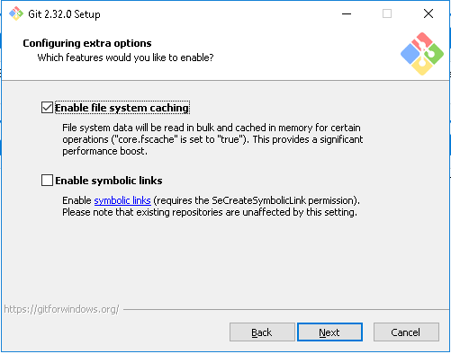
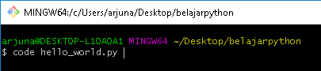
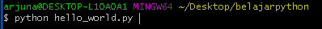

*Theme settings will be saved for
your next visit
Hallo teman-teman!!
Artikel kali ini menjelaskan cara Instalasi Python
berdasarkan pengalaman saya pribadi.
Daftar Isi:
Install Python
Install Git
Hello World!
Virtual Environtment
Untuk Python2 bisa didownload melalui link dibawah ini:
Windows 64-bit
| Windows 32-bit
Untuk Python3 bisa didownload melalui link dibawah ini:
Windows 64-bit
| Windows 32-bit
Setelah teman-teman download file Pythonnya, langsung saja jalankan installernya.
Disini saya menginstal Python3, dibagian bawah jangan lupa di checklist
"Install launcher for all users" dan "Add Python to PATH" kemudian klik
"Install Now".

Selanjutnya proses instalasi akan segera dimulai, tunggu sampai proses instalasi
selesai.

Akan muncul tampilan "Setup was successful", itu artinya proses
instalasi Python telah berhasil. Klik "Disable path length limit"
agar python dapat menggunakan alamat PATH yang melebihi 260 karakter.
Kemudian teman-teman buka Command Prompt dengan cara menekan tombol + R
pada keyboard teman-teman, lalu ketik cmd.

Setelah muncul jendela terminal Command Prompt, ketik python -V
Lalu akan muncul versi dari python yang teman-teman install
Selanjutnya teman-teman install GitBash agar lebih mudah dalam bekerja menggunakan python,
teman-teman bisa download melalui link dibawah ini:
Windows 64-bit
| Windows 32-bit
Untuk versi Git terbaru teman-teman bisa kunjungi link ini.
Setelah didownload langsung saja teman-teman jalankan installer-nya, akan muncul dialog
seperti dibawah ini. Klik Next.
Kemudian teman-teman diminta untuk menentukan lokasi tujuan instalasi gitnya.
Jika teman-teman bingung, langsung saja klik Next.
Centang semua kecuali "Check daily for Git for Windows Updates" lalu klik Next.
Disini teman-teman boleh langsung klik Next saja.
Lalu teman-teman diminta untuk memilih code editor favorit teman-teman,
disini saya memilih "Use Visual Studio Code as Git's default editor" kemudian klik Next.
Kemudian biarkan saja "Let Git decide" lalu klik Next.

Pilih "Git from the command line and also from 3rd-party software", kemudian klik Next.
Biarkan saja "Use the OpenSSL library", klik Next.
Jika teman-teman tidak paham arti dari ketiga pilihan ini, teman-teman bisa langsung klik Next saja.
Pilih "Use MinTTY" lalu Klik Next.
Pilih "Default" saja lalu Klik Next.
Next lagi.
Next lagi.

Ini biarkan saja kosong kemudian Next lagi.
Tunggu hingga proses "Installing" selesai.
Hilangkan centang di kedua checkbox, lalu klik Finish.
Nah sekarang teman-teman sudah berhasil menginstal Git dan Python.
Langkah selanjutnya kita akan membuat "Virtual Environtment" menggunakan Python's library.
Tapi sebelum itu, mari kita coba dulu untuk membuat program Hello World! pertama kita dengan cara
klik kanan pada Desktop teman-teman kemudian "Git Bash Here".
Lalu akan muncul terminal seperti ini, ini adalah terminal milik Git(Git Bash).
Perintah-perintah pada terminal ini sama dengan perintah yang ada pada terminal Linux/UNIX.
Pertama coba teman-teman ketik python -V untuk melihat versi Python.
Jika muncul seperti ini, berarti python dan git teman-teman sudah siap untuk digunakan.
Selanjutnya kita buat folder baru pada desktop dengan nama "belajarpython" menggunakan
perintah mkdir.
Kemudian akan muncul folder baru di desktop teman-teman seperti gambar di bawah ini.
Untuk masuk kedalam folder belajarpython melalui terminal git bash teman-teman
dapat menggunakan perintah cd alias "Change Directory".
Coba teman-teman perhatikan gambar dibawah, alamat direktorinya dari ~/Desktop kini
berubah menjadi ~/Desktop/belajarpython. Itu artinya kita sedang berada didalam folder
belajarpython.
Untuk melihat isi foldernya teman-teman dapat menggunakan perintah ls, maka tidak tampil
apa-apa karena foldernya barusaja kita buat sehingga isinya masih kosong.
Untuk membuat file baru, teman-teman dapat menggunakan perintah touch diikuti dengan nama
filenya. Disini saya membuat file baru dengan nama hello_world.py.
Sekarang coba teman-teman gunakan lagi perintah ls, maka akan tampil nama file yang barusaja
kita buat.
Untuk membuka file tersebut dengan VS: Code, cukup ketikkan code [nama_file].

Maka file tersebut akan terbuka didalam Visual Studio Code, selanjutnya teman-teman dapat mengetikkan
perintah-perintah coding menggunakan bahasa pemrograman python.
Untuk permulaan, kita coba ketikkan perintah print("Hello_World!") kemudian Save.
Lalu teman-teman coba jalankan di terminal Git Bash dengan perintah python [nama_file].

Maka output-nya akan seperti gambar dibawah ini.
Selanjutnya kita akan menginstal library virtualenv menggunakan perintah pip install [nama_library].

Jika sudah selesai, teman-teman bisa menggunakan perintah pip list untuk melihat library
apa saja yang sudah terinstal.
Untuk membersihkan text yang ada pada terminal, teman-teman dapat menggunakan perintah-perintah
clear.
Selanjutnya kita akan membuat virtual environtment dengan mengetikkan perintah
virtualenv -p [versi_python] [nama_virtual_environtment].
Sekarang coba teman-teman ketikkan perintah ls untuk melihat isi direktori,
sekarang sudah bertambah 1 folder virtual environtment yang telah kita buat tadi.
Untuk mengaktifkan virtual environtment, teman-teman gunakan perintah
source venv/Scripts/activate.
Kemudian akan ada nama dari virtual environtment kita didalam terminal Git Bash.
Ketika dicoba menggunakan perintah pip list maka tampilan library yang
terinstal hanya ada tiga karena itu merupakan library default ketika kita baru menginstal
python.
Selanjutnya kita akan mencoba menginstal dan menggunakan salah satu library python
yaitu Turtle.
Jika tampilannya seperti ini berarti teman-teman sudah berhasil menginstal library Turtle menggunakan pip.
Kita coba buat program Turtle sederhana.
Lalu jalankan didalam terminal Git Bash maka hasilnya akan seperti dibawah ini.
Jika sudah selesai menggunakan virtual environtment-nya, jangan lupa untuk dilakukan deactivate.
Itulah step-by-step yang saya lakukan ketika pertama kali menginstal dan menggunakan python di Windows,
semoga artikel ini dapat membantu teman-teman yang baru ingin belajar python. :)